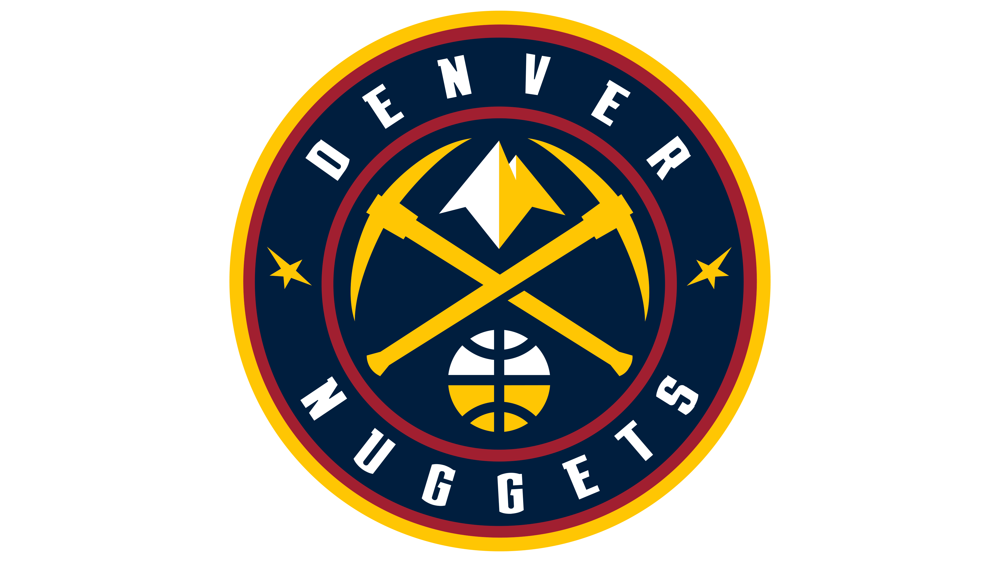

Los Denver Nuggets (en español: Pepitas de Denver) son un equipo profesional de baloncesto de los Estados Unidos con sede en Denver, Colorado. Compiten en la División Noroeste de la Conferencia Oeste de la National Basketball Association (NBA) y disputan sus partidos como locales en el Ball Arena, ubicado en el centro de la ciudad de Denver.
En sus primeras finales desde su traspaso a Oklahoma City, se enfrentaban a Miami Heat que venían de eliminar 4-3 a los Boston Celtics en una fantástica serie. En el primer partido Oklahoma mostró algo de inexperiencia pero con 36 de Kevin Durant los Thunder se llevan el primer juego de la serie(1-0). En el segundo partido Miami empezó con un 18-2 y parecía que se llevarían el partido fácil pero no fue hasta el último cuarto donde Oklahoma se acercó hasta ponerlo a 2, Durant pudo empatar el partido pero falló su lanzamiento y Lebron con el pulso firme metió dos tiros libres y empató la serie(1-1). En el tercer partido Miami sufrió hasta los 2 últimos para ganar el partido y poner la serie 2-1 a favor de ellos.En el cuarto partido Oklahoma lideraba 33-19 en el primer cuarto y parecía que iba a empatar la serie, pero a pesar de los 43 puntos de Westbrook en factor ganador fue Mario Chalmers que con 26 puntos y 4 tiros libres para definir el partido ayudó a Miami a ponerse 3-1 y a un paso del título.
El 28 de diciembre de 2004, el entrenador Jeff Bzdelik fue despedido y sustituido por el exjugador de Los Angeles Lakers Michael Cooper, antes de ser reemplazado permanentemente por George Karl. Karl cumplió con creces liderando a los Nuggets a un balace de 32-8 bajo su mandato, clasificándoles a playoffs por segunda temporada consecutiva. En playoffs, sin embargo, no pudieron parar a los San Antonio Spurs de un energético Manu Ginóbili. Tras ganar el primer partido, los Spurs sentenciaron con cuatro victorias consecutivas apeando a los Nuggets. En la temporada 2005-06, el equipo ganó la División Noroeste por primera vez en 18 años y los colocó en la tercera posición de la Conferencia Oeste. Se enfrentaron en postemporada a Los Angeles Clippers, que aunque tuvieron mejor balance que ellos estuvieron finalmente colocados en peor posición, cayendo derrotados en cinco partidos.
 Indice
Indice